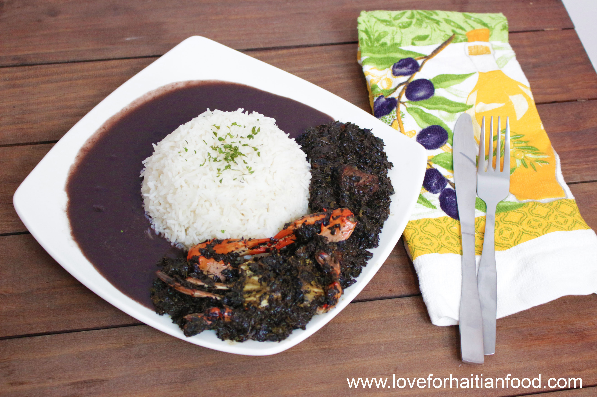
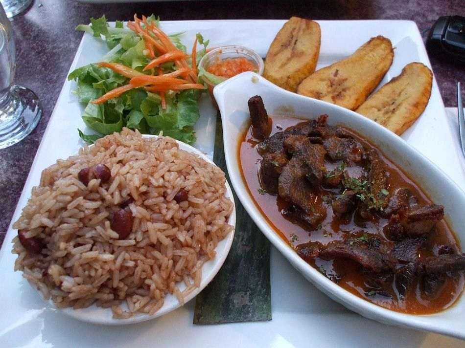

Dinner |
|
Now to wrap up the day. If you thought granny could do no more. You are so so very wrong. Gran will come through with a left hook deadly than Mike Tyson's. "In rice we trust". Come to dinner were granny now brings 2 different rice dishes one is a white rice with a black bean sauce and Lalo (like spinach but cooked in a pot with oil then has seasoned beef, oxtials, or crab added in to cook together. Next to it is probably my favorite varitaion. Its rice but cooked in a brown bean broth and then served with beans but paired with deep fried pork, plaintains, and carribean kimichi of sorts. It is simply shredded cabbage, onion, lime juice, and spicy peppers left to marrinate for a few hours.  In conclusion, check off the dinner Checklist
|